Agenda da família
Eventos de vários Google Agendas (iCal) com cor por pessoa, próximo compromisso e contagem regressiva.
Agenda, clima, trânsito, câmeras ao vivo, estoque da cozinha, biblioteca de livros, o Diogows (uma área de trabalho no navegador) e mais, num único hub leve que roda no seu próprio servidor. Sem nuvem de terceiros guardando as suas câmeras.
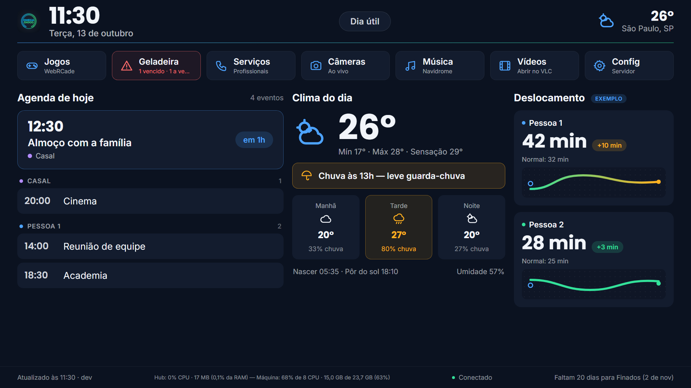
Pensado para ficar ligado na parede, lido de longe, e para ser consultado do celular quando você precisar.
Eventos de vários Google Agendas (iCal) com cor por pessoa, próximo compromisso e contagem regressiva.
Temperatura, previsão por período e aviso de chuva, direto do Open-Meteo, sem precisar de chave. Selo de feriado e modo noturno que escurece a tela.
Tempo até o trabalho, hora de sair e mini-mapa. Você escolhe quando consultar a API: sob demanda, numa janela ou sempre.
RTSP H.264 entregue ao navegador sem recodificar e sem ffmpeg. Rodízio na tela inicial e modo compatível para TVs.
Um arquivo MP4 por hora e por câmera, contínuo ou só com movimento, com retenção por dias e GB e cópia diária para o Drive.
Itens com quantidade, peso e validade, locais que você define e alerta do que está vencendo, até no menu.
Eletricista, encanador, pintor: contato, quem indicou e o que foi feito. Sincroniza com uma planilha do Google se quiser.
Vídeos da pasta do servidor, no navegador ou no VLC. Biblioteca de PDFs e EPUBs com envio pelo painel, categoria, dono e leitor de EPUB.
Sem editar arquivos: câmeras, agendas, rotas, menu, cidade, livros e integrações têm abas na Config, com ajuda embutida.
Além do painel, o hub serve o Diogows, uma área de trabalho completa em /desktop.html: janelas, menu Iniciar por categorias, menu de contexto, ícones e barra de tarefas, com login e um escritório próprio (documentos, planilhas, apresentações e o LibreOffice completo). É uma interface a mais: o painel de sempre, o Navidrome e o WebRCade continuam onde estavam e aparecem no menu Iniciar.
Cada pessoa com a sua conta, a sua pasta e as suas preferências. O administrador libera, usuário por usuário, o que cada um pode usar. Senha inicial sorteada e troca obrigatória no primeiro acesso.
O menu Iniciar agrupa os aplicativos por categoria, com busca, e lembra o estado. Botão direito (ou toque longo no celular e tablet) abre menus na área de trabalho, nos ícones, na barra de tarefas, nas janelas e no Explorer. Em telas estreitas, as janelas ocupam a tela inteira.
Solte arquivos, pastas e atalhos de aplicativos direto na área de trabalho: envie do aparelho, do Explorer ou arrastando. Cada ícone abre com o programa certo.
Navegue, envie, renomeie, mova arrastando e apague. Botões para criar documento, planilha e apresentação. Quem tem permissão alterna para os arquivos do servidor e pode agir como root (sudo), com a senha do administrador.
Editor leve, no navegador, que abre e salva Word e LibreOffice: títulos, negrito, listas, tabelas, links e imagens. Avisa antes de sobrescrever um arquivo com recursos que ele não mantém.
Cerca de 100 fórmulas, em inglês e em português (=SOMA, =SE, =PROCV), várias abas, preencher arrastando, congelar painéis, mesclar, formatos de número e data e ordenação. A grade usa canvas e abriu 200 mil células em menos de 3 s.
Slides em miniatura, caixas de texto, formas, setas, imagens, notas do apresentador e modo Apresentar em tela cheia. Lê modelos do PowerPoint.
O LibreOffice inteiro (Writer, Calc, Impress) rodando no navegador em WebAssembly, para o que os editores leves não fazem. Abre .doc, .xls, .ppt, .rtf e mais; exige HTTPS ou localhost.
O servidor busca a página e entrega limpa, sem executar script. Arquivos baixam em segundo plano para Meus arquivos/Downloads, com progresso, e podem ser instalados como programa. Só sites da internet, nunca a rede da casa.
Instale programas DOS (.zip ou .jsdos) e rode no navegador com o js-dos, nas engines DOSBox e DOSBox-X em WebAssembly, já dentro do hub. Windows 9x só com imagem sua e licenciada; esse caminho não foi testado com uma imagem real.
Um lugar só para programas, sistema, contas, calendário, câmeras e rede, com busca. O administrador abre a Config do painel aba por aba. Os acessórios podem ser mostrados ou escondidos do menu.
Conversa entre usuários com envio de arquivos e imagens (arraste, cole um print ou use o clipe), avisos no sino e confirmação de visto. Anexos podem ser salvos em Meus arquivos/Recebidos.
Cada um junta as suas agendas iCal num só calendário (mês ou próximos dias) e recebe avisos no Diogows: sino, tela e som, antes e na hora do compromisso.
Comandos no servidor de qualquer aparelho da rede, com opção sudo. Desligado por padrão e liberado só a quem o administrador autorizar; cada comando fica no journal.
Imagens, PDF e um bloco de notas com realce de cores (JSON, log, Markdown, CSV, código), abrindo arquivos da sua pasta ou, com permissão, os do computador.
Biblioteca de vídeos da casa com legenda e arquivos do Explorer, avançar e voltar, velocidade e lista de reprodução, direto no navegador.
Cada câmera abre numa janela separada, ou todas em mosaico. Só o administrador adiciona, renomeia e remove câmeras.
Sistema, CPU, memória, discos e rede do servidor, com atalho para as unidades no Explorer. E a lista de profissionais da casa, com ligação e WhatsApp.
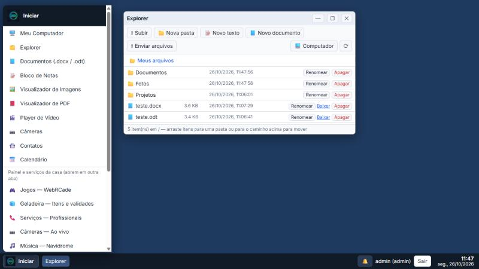
Dão a quem tem permissão o poder do usuário do serviço e, com o sudo, o de root. Ligue em "desk": {"shell": true} no hub.config.json e, para o sudo, rode sudo bash install.sh --desk-shell. Cada uso exige a sua senha, rede local ou HTTPS e fica registrado. Leia o guia do Diogows e o SECURITY.md.
As capturas usam dados fictícios (ou desfocados). Clique para ampliar.
Agenda, clima com aviso de guarda-chuva e tempo de deslocamento de cada pessoa, com atalhos para as outras páginas no topo. Em tela de TV, 1920×1080 escalado.
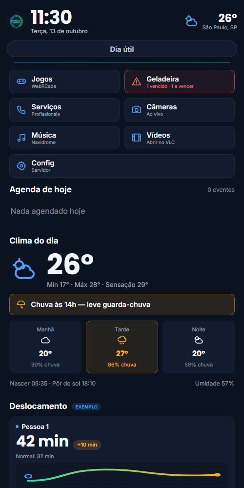
O mesmo código se reorganiza em retrato: menu, agenda, clima e deslocamento, um embaixo do outro. Sem aplicativo para instalar.
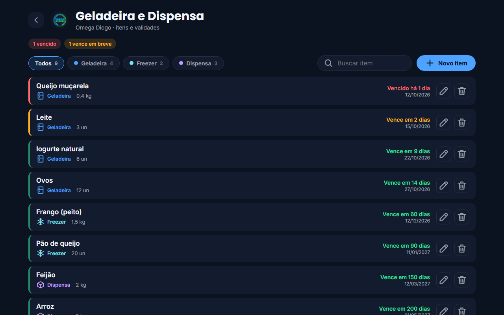
Vencidos em vermelho, vencendo em âmbar. Locais próprios (geladeira, freezer, dispensa ou os que você criar), busca e cadastro rápido.
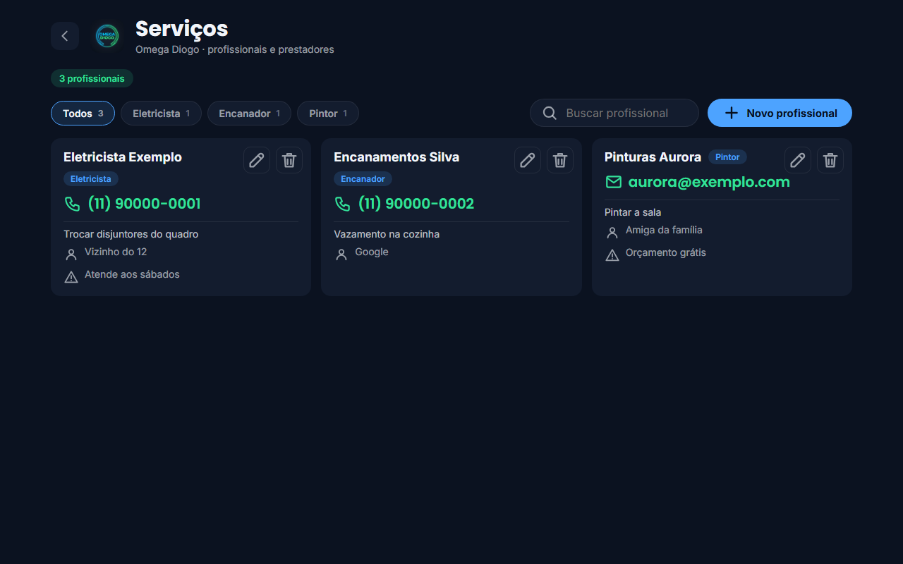
Contato, indicação e o que foi combinado, num lugar que toda a família acessa.
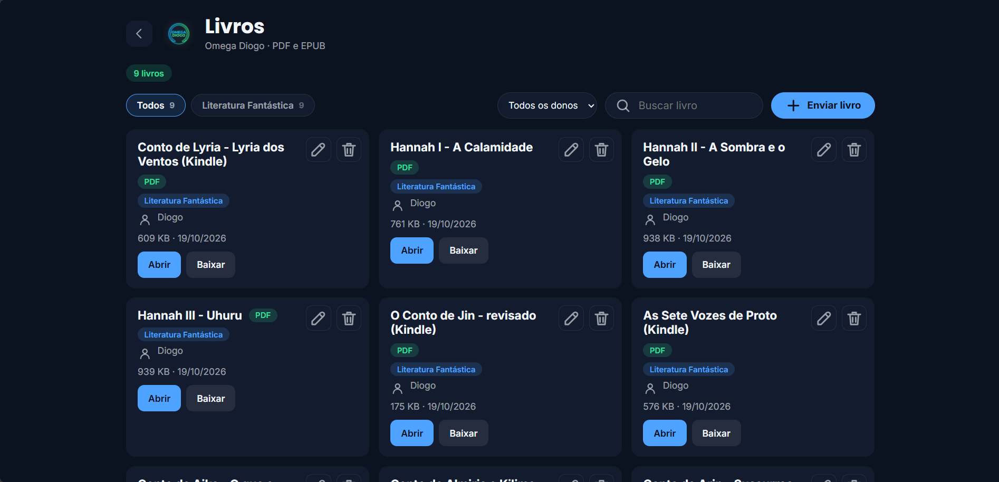
PDFs e EPUBs no servidor, com categoria e dono, filtros e busca. Envie arquivos pelo próprio painel; o EPUB abre no leitor da página e o PDF no navegador.
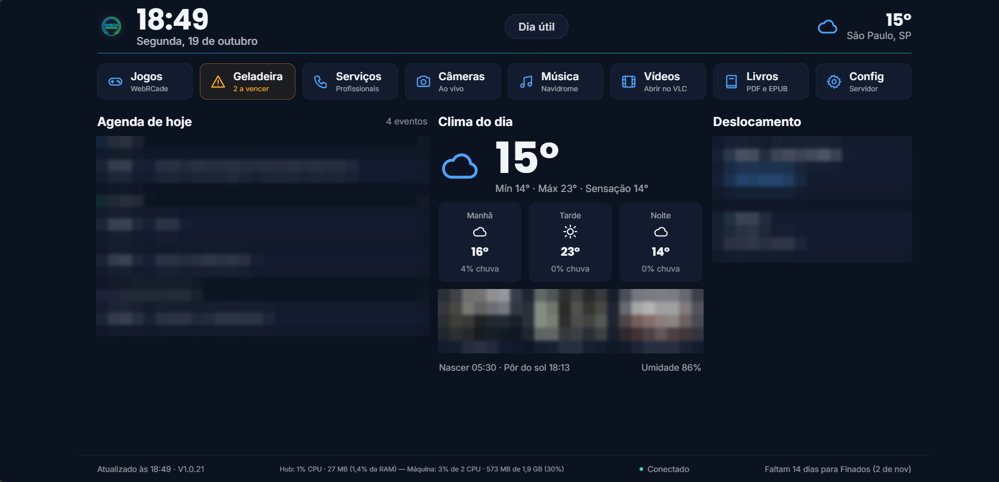
O atalho Livros entra no menu da tela inicial e some sozinho se a página for desligada na Config. (Nesta captura, agenda, trajeto e câmeras foram desfocados.)
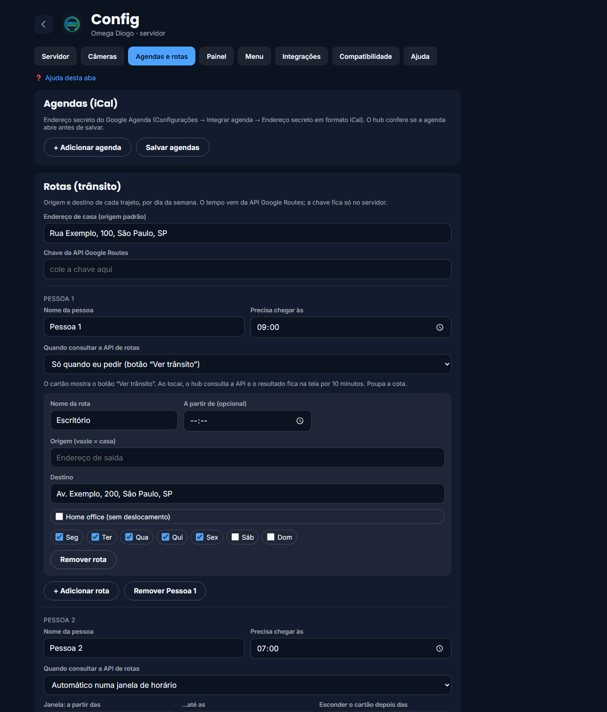
Adicione pessoas, rotas por dia da semana e escolha a regra de consulta da API: só quando pedir, numa janela de horário ou sempre.
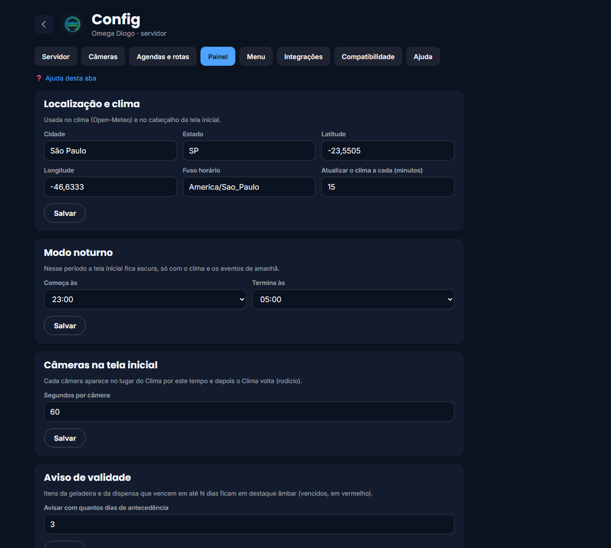
Cidade e clima, modo noturno, rodízio das câmeras, aviso de validade, locais do estoque e feriados locais.
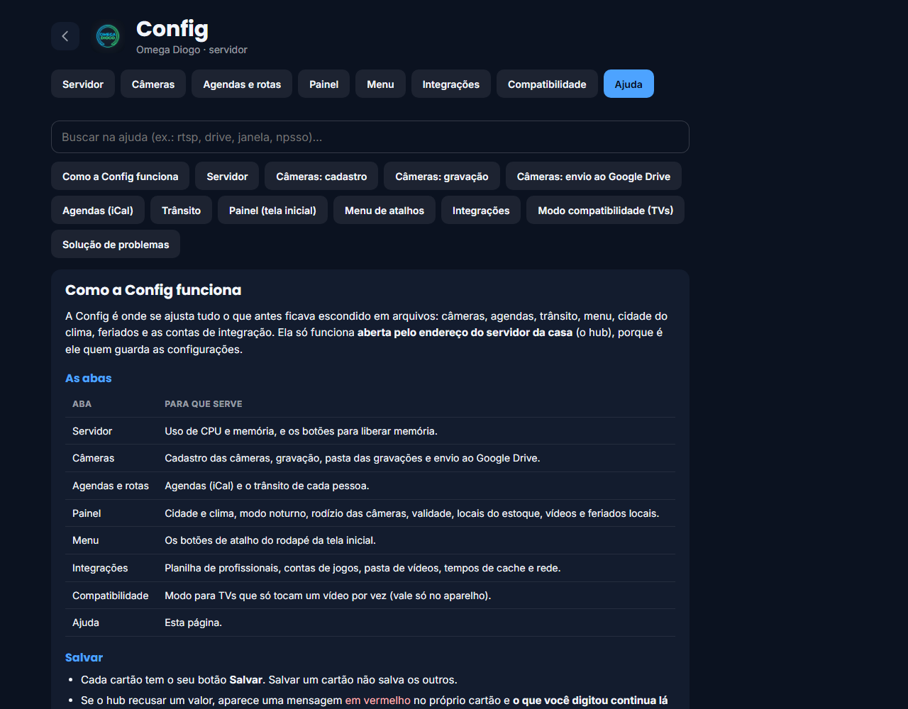
Uma aba de ajuda com busca explica, passo a passo, cada configuração: onde achar o endereço do iCal, como montar o endereço RTSP, o que cada regra faz.
Janelas que se movem, redimensionam e minimizam. O menu Iniciar traz os aplicativos e, logo abaixo, os atalhos do painel: Jogos (WebRCade), Música (Navidrome), Geladeira, Vídeos e os demais.
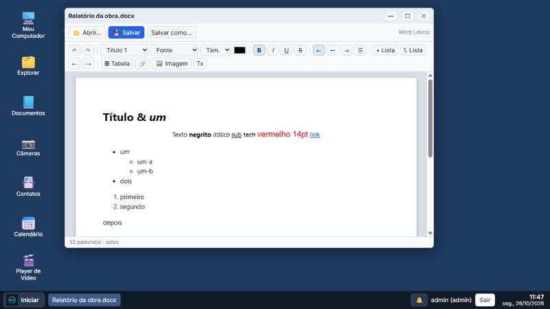
Abre e salva nas pastas dos usuários, com títulos, estilos, cor e tamanho da letra, listas, tabelas, links e imagens. Avisa antes de substituir um arquivo com recursos que o editor não mantém.
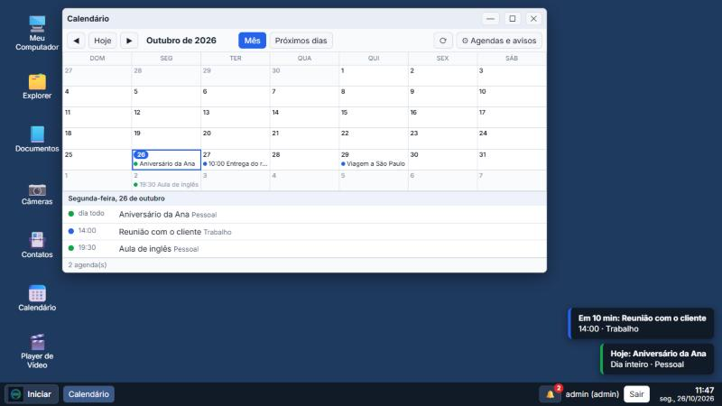
As agendas iCal de cada usuário num só calendário. Os avisos aparecem no Diogows dele (sino, tela e som), 10 minutos antes e na hora do compromisso, e se ajustam em Agendas e avisos.
O hub serve o painel e a API, guarda as senhas e conversa com os serviços. Os aparelhos só abrem um endereço no navegador.
Binário Go sem CGO e só biblioteca padrão mais SQLite em Go puro. O serviço limita a memória (400 MB) e roda em máquinas de 2 GB.
Senhas de câmeras, chaves de API e endereços de agenda nunca vão para os aparelhos: a tela mostra só a versão mascarada.
JS e CSS clássicos, sem recursos novos, para navegadores de TV. O modo compatibilidade mostra uma câmera por vez onde só cabe um vídeo.
As mudanças ficam em um arquivo no servidor e valem na hora. As opções do próprio hub (pastas, Drive, jogos) valem após reiniciar, com um botão para isso.
Uso de CPU e memória e botões para liberar recursos.
Cadastro, gravação por câmera, pasta e envio ao Drive.
iCal, pessoas, rotas e regras de consulta do trânsito.
Cidade, modo noturno, rodízio, validade, locais e feriados.
Liga ou desliga a página e define categorias e donos.
Adicione, remova e reordene os atalhos do rodapé.
Planilha de profissionais, jogos, cache e rede.
Português, English, Español e 中文, e uma câmera por vez para TVs. Vale por aparelho.
Manual completo com busca, dentro do sistema.
Você precisa do Go 1.26 ou mais novo. Sem arquivo de configuração o hub sobe com os padrões e você configura tudo pela tela.
Baixe o projeto e rode o hub a partir da pasta server/.
git clone https://github.com/exadmax/DVRCentral.git cd DVRCentral/server go run .
Abra http://localhost:8080 e entre em Config.
Gere o pacote no seu PC e instale como serviço (Debian ou derivados).
cd server ./package.sh # gera dist/centraldiogo.tgz # no servidor: sudo bash install.sh # instala em /opt/centraldiogo
Depois, abra o endereço do servidor no navegador da TV.
Quer o Diogows? Abra /desktop.html. Na primeira vez, o usuário admin recebe uma senha inicial sorteada, mostrada uma única vez no log do hub (journalctl -u centraldiogo-hub | grep desktop), e a troca é obrigatória.
Mais detalhes na documentação, no guia do Diogows e no mapa de funcionalidades.
O painel não tem login (só o Diogows tem): quem alcança a porta vê as câmeras e a Config. Não exponha à internet. Para acessar de fora, use uma VPN (Tailscale, WireGuard) ou um proxy reverso com autenticação e HTTPS.
Gravações de câmeras são dados pessoais: avise quem frequenta a casa e respeite a legislação local. Veja o SECURITY.md.